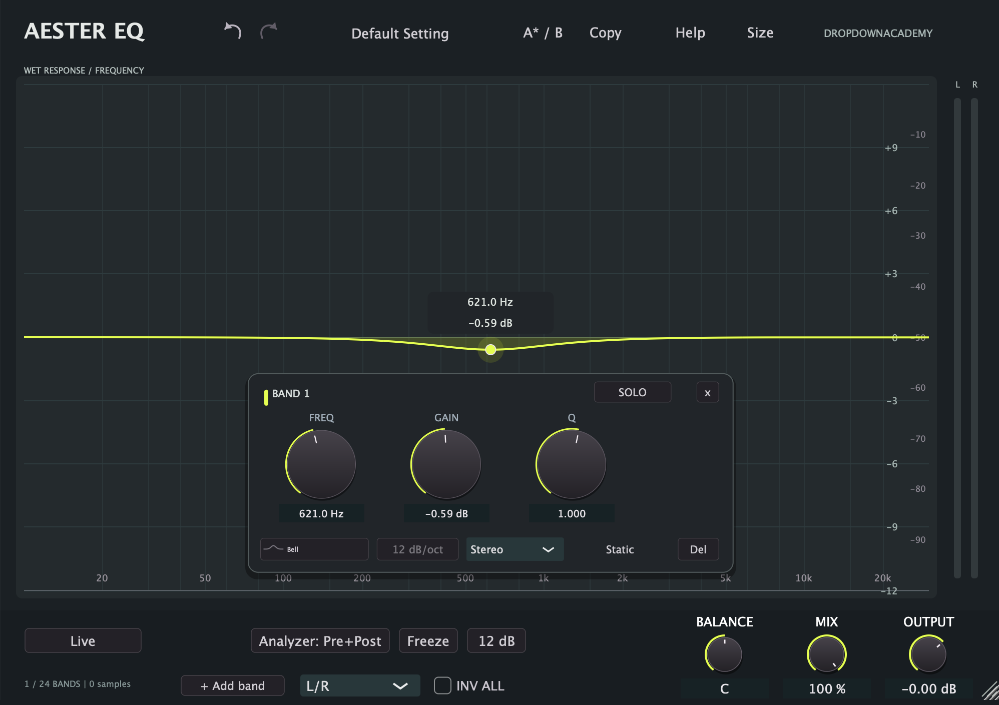

Manuale d'uso
Aester EQ è un equalizzatore a 24 bande pensato per lavorare in modo mirato: poche bande, molto controllo, e la possibilità di scegliere per ogni banda se il guadagno debba essere fisso (Static), pilotato dal livello del segnale (Dynamic) o applicato per frequenze (Spectral).
Il percorso statico usa filtri lineari: il timbro cambia per guadagno e larghezza di banda, senza saturazione intenzionale. La modalità Dynamic legge un level detector e muove il guadagno del filtro; la modalità Spectral lavora su una trasformata a breve termine per intervenire su regioni di frequenza.
Il plugin è distribuito in formato Audio Unit e standalone su macOS e VST3 e standalone su Windows.
| macOS | macOS 11 o successivo, Apple Silicon (arm64). Formati: AU, standalone. |
| Windows | Windows 10/11 a 64 bit. Formati: VST3, standalone. |
| Host | Qualsiasi DAW che carichi AU (macOS) o VST3 (Windows). |
Aester-EQ-DropDownAcademy-1.3.0-macOS-arm64.dmg.Aester-EQ-DropDownAcademy-Installer.pkg e completa l'installazione (richiede la password di amministratore).Aester EQ.component in /Library/Audio/Plug-Ins/Components e Aester EQ.app in /Applications.Aester-EQ-DropDownAcademy-1.3.0-Windows-x64.exe e accetta la richiesta di privilegi di amministratore.C:\Program Files\Common Files\VST3\Aester EQ.vst3, lo standalone in C:\Program Files\DropDownAcademy\Aester EQ.La 1.3.0 usa un nuovo identificativo del prodotto (bundle identifier e codice produttore). La versione precedente non viene sovrascritta: rimuovi la vecchia Aester EQ.component (o Aester EQ.vst3) e la vecchia applicazione, poi reinstalla e riscansiona. I parametri e gli stati salvati con la 1.2.0 vengono letti correttamente, ma alcuni host potrebbero segnalare l'istanza precedente come mancante, perché l'identità del plugin è cambiata.
Aester EQ.component da /Library/Audio/Plug-Ins/Components e Aester EQ.app da /Applications.I preset utente e i file di sessione non vengono cancellati.
Una nuova istanza si apre senza bande attive. Nel grafico compare la scritta Double-click the graph to add a band: fai doppio clic in un punto qualsiasi per creare la banda 1, oppure premi + Add band.
La finestra parte a 1000 × 700 punti. Puoi ridimensionarla trascinando l'angolo in basso a destra oppure usando il menu Size. La dimensione scelta viene ricordata dall'istanza finché resta caricata.

Finestra principale: grafico della risposta, pannello flottante della banda selezionata, footer con i controlli globali.
| Area | Cosa contiene |
|---|---|
| Barra superiore | Nome del prodotto, Undo/Redo, menu dei preset, A/B, Copy, Help, Size. |
| Grafico | Risposta in frequenza wet prima del Mix, nodi delle bande, analizzatore. In alto a sinistra l'etichetta WET RESPONSE / FREQUENCY. |
| Meter L / R | A destra del grafico, picco per canale. |
| Pannello flottante | Compare quando selezioni una banda: FREQ, GAIN, Q, SOLO, forma, pendenza, posizione stereo, modalità. Rimane fermo durante la rotazione di un controllo e segue la frequenza quando lo rilasci. |
| Striscia bande | Card numerate (01–24) su quattro pagine da sei. Ogni card ha interruttore di attivazione e i campi numerici di frequenza, guadagno e Q. |
| Footer | Modalità di processing, analizzatore, Freeze, intervallo in dB, selettore L/R–Mid/Side, INV ALL e le manopole BALANCE, MIX, OUTPUT. |
I campi numerici delle card permettono di inserire un valore esatto. Il pannello flottante ha gli stessi tre controlli in forma di manopola, con la frequenza e il guadagno mostrati anche accanto al nodo.
| Forma | Uso tipico |
|---|---|
| Bell | Campanello simmetrico: la forma più usata per correzioni tonali. |
| Low Shelf | Guadagno costante sotto la frequenza scelta. |
| Low Cut | Taglio passa-alto con pendenza selezionabile. |
| High Shelf | Guadagno costante sopra la frequenza scelta. |
| High Cut | Taglio passa-basso con pendenza selezionabile. |
| Notch | Taglio stretto su una frequenza precisa. |
| Band Pass | Lascia passare solo la regione attorno alla frequenza. |
| Tilt Shelf | Bilanciamento progressivo tra basse e alte. |
| Flat Tilt | Inclinazione lineare della risposta. |
| All Pass | Modifica la fase senza variare il modulo. |
Solo per Low Cut e High Cut il menu della pendenza è attivo: 6, 12, 24, 36, 48, 72 o 96 dB/ottava. Sulle altre forme il controllo è disabilitato.
Le card sono organizzate in quattro pagine da sei. Le frecce accanto all'indicatore di pagina cambiano pagina; il contatore in basso a sinistra riporta quante bande sono attive sul totale (per esempio 3 / 24 BANDS).
Il guadagno della banda è fisso: è l'equalizzazione classica. In modalità Live, Static non introduce latenza aggiuntiva.
Il guadagno del filtro viene mosso dal livello del segnale. Il pannello espanso mostra:
| THRESHOLD | Soglia di intervento. Il valore corrente del detector è mostrato accanto. |
| RANGE | Quanto il guadagno si muove: negativo riduce il livello quando la soglia è superata, positivo lo espande. |
| ATTACK | Velocità con cui il guadagno raggiunge il valore di intervento. |
| RELEASE | Velocità con cui torna indietro. |
| Trigger Band / Free | Band: il detector segue la regione di frequenza della banda. Free: consente tagli separati di rilevamento bassi e alti. |
| External key | Ogni banda ha un interruttore: perché funzioni, la DAW deve anche instradare una sorgente di sidechain. Una chiave esterna assente o silenziosa non viene trattata come ingresso principale. |
L'analisi avviene per frequenza: il guadagno viene applicato a regioni dello spettro a breve termine. Aggiunge latenza rispetto al percorso Live (vedi capitolo 8) e va usata quando serve un intervento selettivo che i filtri IIR non permettono.
Ogni banda sceglie dove agire:
| Stereo | Applica la banda a entrambi i canali. |
| Left / Right | Agisce su un solo canale. |
| Mid / Side | Agisce sulla componente somma (Mid) o differenza (Side). |
In un segnale mono, il processing che riguarda solo Right o Side non ha effetto. La collocazione stereo di una banda viene rispettata anche dal Solo.
Il pulsante di fase nel footer sceglie il percorso di processing:
| Modalità | Comportamento | Latenza aggiunta |
|---|---|---|
| Live | Filtri IIR. In Static e Dynamic non aggiunge ritardo. | 0 campioni |
| Analog FIR | Campiona la risposta complessa dei filtri a una frequenza di progetto elevata. | 320 campioni |
| Linear FIR | Mantiene il modulo con un kernel simmetrico; cinque risoluzioni (Low, Medium, High, Very High, Maximum). | Cresce con la risoluzione |
| Spectral | Analisi e sintesi a breve termine. | 1024 campioni in più rispetto al percorso scelto |
Le risoluzioni FIR più alte migliorano la definizione alle basse frequenze, ma aumentano latenza e pre-ringing. Il valore di latenza riportato nel footer è quello dichiarato all'host e usato per allineare il dry nel Mix.
Mix è una miscela lineare tra segnale dry e segnale processato, allineata in latenza: al 100% senti solo il wet, allo 0% solo il dry. La variazione è smussata su 20 ms.
Due punti importanti:
SOLO isola temporaneamente la regione di frequenza della banda selezionata, prelevandola dall'uscita già processata (non bypassa le altre bande). La larghezza dell'audizione segue il Q della banda: campanelli, notch, band pass, tilt e all pass usano un monitor passa-banda centrato sull'unità; Low Shelf e High Cut fanno ascoltare la regione bassa, High Shelf e Low Cut quella alta.
Durante il Solo, nel grafico solo la banda in audizione resta evidenziata in giallo; le altre e la risposta complessiva vengono attenuate.
Il pulsante Analyzer sceglie cosa mostrare: Off, Pre (prima del processing), Post (dopo), Pre+Post. Il menu contestuale aggiunge:
Freeze blocca l'aggiornamento dello spettro: audio, riduzione di guadagno e meter continuano a funzionare. Resume riavvia il disegno. Lo stato di Freeze è locale all'editor e non è un parametro salvato nello stato del plugin.
Il pulsante accanto (12 dB / 30 dB / 6 dB) cambia l'intervallo verticale del grafico. I meter di uscita usano ritenzione di picco con decadimento nel tempo.
| OUTPUT | Guadagno di uscita sul percorso wet. Doppio clic riporta a 0 dB. |
| MIX | Miscela dry/wet (capitolo 9). Doppio clic riporta a 100%. |
| BALANCE | Bilanciamento post-Mix. Mostra percentuali L/R oppure M/S con C al centro. Doppio clic riporta al centro. |
Poiché Balance e polarità sono dopo il Mix, restano attivi anche a Mix 0%. Il bypass del plugin ripristina il segnale non bilanciato e non invertito.
Selezionando Mid / Side dal menu della modalità stereo, si apre il pannello MID / SIDE OUTPUT con:
La manopola di bilanciamento centrale favorisce il Mid verso sinistra e il Side verso destra. Questi controlli agiscono dopo il Mix, richiedono un segnale stereo, vengono salvati nei preset e sono rilasciati dal bypass. In modalità L/R il pannello è nascosto.
| Menu preset | Salva e carica lo stato, ripristina i parametri predefiniti, attiva il bypass. |
| Undo / Redo | Frecce nella barra superiore. Coprono le modifiche dell'editor aperto. |
| A* / B | Due stati di confronto locali all'editor. L'asterisco indica il lato attivo. |
| Copy | Copia lo stato corrente negli appunti del plugin. |
| Size | Dimensioni predefinite della finestra. |
La cronologia Undo/Redo e l'A/B sono locali all'editor: sono cose diverse dalla persistenza dei preset e dello stato nella sessione.
| Sintomo | Cosa fare |
|---|---|
| Il plugin non compare nella DAW | Riavvia la DAW dopo l'installazione e forza una nuova scansione dei plugin. Su macOS verifica che Aester EQ.component sia in /Library/Audio/Plug-Ins/Components. |
| macOS blocca lo standalone | Clic destro sull'app → Apri. Il pacchetto non è notarizzato. |
| Windows segnala il file come non sicuro | Conferma in SmartScreen: l'installer non è firmato con un certificato commerciale. |
| Errore di DLL mancanti su Windows | Installa il Microsoft Visual C++ 2015-2022 Redistributable x64 ufficiale. |
| La sessione non trova il plugin dopo l'aggiornamento | La 1.3.0 ha una nuova identità: reinstalla la 1.2.0 per riaprire la sessione, oppure ricarica il plugin e ripristina i parametri. |
| Latenza percepita alta | Controlla il percorso di fase nel footer: Live è a zero ritardo, Analog FIR 320 campioni, Spectral +1024. |
| Il confronto A/B non cambia | L'A/B è locale all'editor aperto e non è salvato nei preset. |
| Prodotto | Aester EQ 1.3.0 — DropDownAcademy |
| Bande | 24, su quattro pagine da sei |
| Forme | 10 (Bell, Low Shelf, Low Cut, High Shelf, High Cut, Notch, Band Pass, Tilt Shelf, Flat Tilt, All Pass) |
| Modalità | Static, Dynamic, Spectral |
| Posizioni stereo | Stereo, Left, Right, Mid, Side |
| Percorsi | Live IIR, Analog FIR, Linear FIR (5 risoluzioni), Spectral |
| Formati | AU + standalone (macOS arm64), VST3 + standalone (Windows x64) |
| Licenza | AGPL-3.0-only. Il codice sorgente è incluso nel pacchetto macOS. |
Il prodotto è distribuito da DropDownAcademy. Le note sulle librerie di terze parti sono in THIRD_PARTY_NOTICES.md.